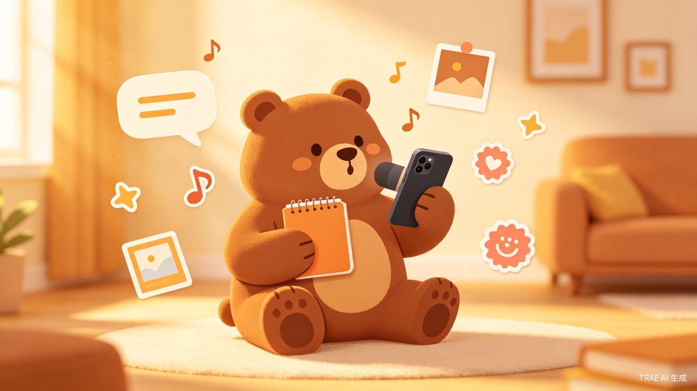
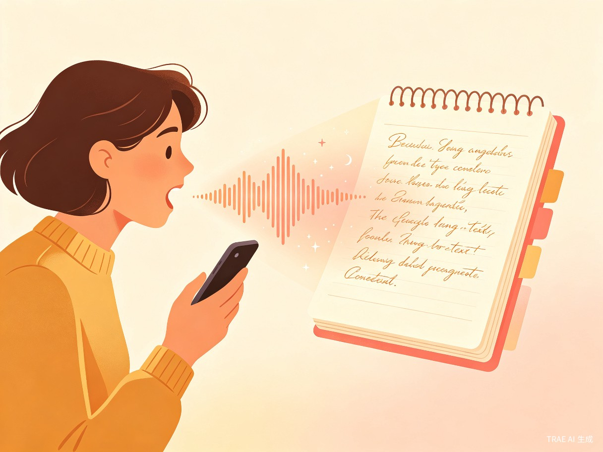
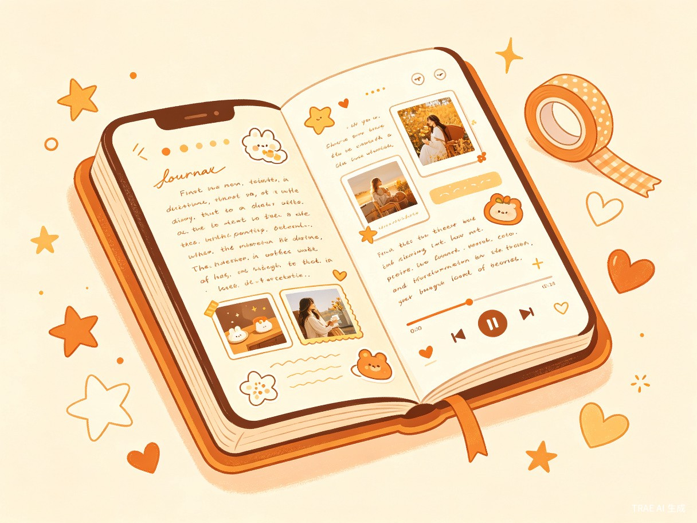
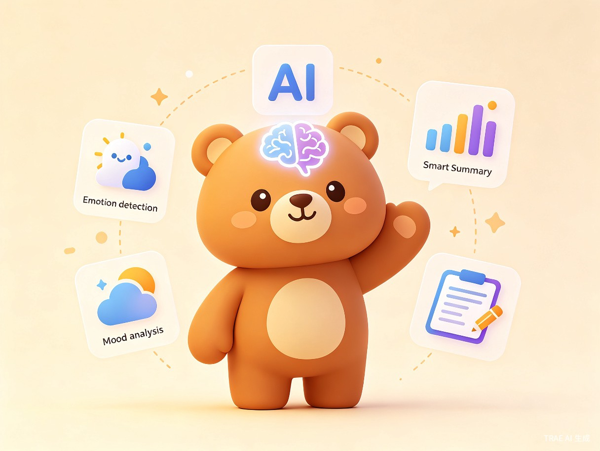

熊熊日记
说出来，就是一篇日记
语音日记 · 手帐创作 · AI 陪伴
01 创意名称与介绍
创意名称
熊熊日记（BearDiary）—— 一款以语音为核心的智能日记 App，让记录生活变得像和好朋友聊天一样简单。
想解决什么问题
很多人想写日记，但打字太累、提笔忘字、坚持不下去。忙碌一天后，对着空白页面反而不知道从何说起。传统的文字日记门槛高，而纯语音备忘又缺乏仪式感和可回顾性。
为什么会想到做这个
灵感来源于一个很日常的场景：深夜躺在床上，脑子里翻涌着一天的喜怒哀乐，想记录下来却懒得打字。如果只需要开口说话，就能自动生成一篇排版精美的日记，同时保留自己真实的声音，那该多好？再加上手帐爱好者喜欢的贴纸、音乐、图片等装饰元素，以及 AI 帮你回顾和总结情绪，这就是"熊熊日记"的初衷。
大概是什么产品
一款移动端 App（iOS / Android），核心功能是"语音说日记 → 实时转文字 → 手帐式排版"，融合 AI 情绪分析与智能写作辅助，打造一个温暖、有陪伴感的个人记录空间。
02 目标用户及痛点
面向哪些用户
忙碌的上班族
工作压力大，下班后疲惫，想记录生活但缺乏时间和精力去打字写日记。
手帐爱好者
喜欢用贴纸、图片、音乐装饰日记，追求美观和仪式感，但纸质手帐不便携带和检索。
情绪敏感人群
希望通过记录来释放情绪、梳理内心，需要被理解和陪伴的感觉。
学生群体
想养成写日记的习惯来记录成长，但常常因为"不知道写什么"而放弃。
在什么场景下使用
- 通勤路上：地铁或公交中，戴上耳机说一段今天的见闻和感受
- 睡前时光：躺在床上，对着手机轻声讲述今天最触动自己的瞬间
- 旅行途中：边走边说，配上沿途拍摄的照片和当地音乐
- 情绪波动时：开心、难过、愤怒时，随时打开 App 倾诉，AI 会温柔回应
- 周末回顾：翻阅过去一周的日记，AI 帮你生成"本周心情报告"
当前痛点
| 痛点 | 现状 | 熊熊日记的解决方案 |
|---|---|---|
| 记录门槛高 | 打字慢、不知道写什么、提笔忘字 | 语音输入，想说就说，实时转文字 |
| 难以坚持 | 日记 App 功能枯燥，缺乏激励和仪式感 | 手帐式美化 + AI 互动，让记录变得有趣 |
| 情绪无处安放 | 社交平台不适合倾诉私密情绪 | AI 情绪陪伴 + 私密空间，安全表达 |
| 回顾体验差 | 纯文字日记翻阅无聊，缺乏多媒体记忆 | 图文音视一体 + 日记本翻阅效果 |
| 缺乏反思 | 记了就忘，没有从记录中获得成长 | AI 情绪分析 + 周报月报，看见自己的变化 |
03 核心功能
语音日记 —— 说出你的故事

- 实时语音转文字：采用先进的 ASR 语音识别技术，说话的同时文字自动生成，支持中文、英文等多语言
- 语音原声保留：每篇日记同时保存语音录音，点击播放按钮即可回听，重温当时的语气和情感
- 智能分段与标点：AI 自动识别语句停顿，添加标点符号，让转写文本排版清晰可读
- 多段合并：一天内可以多次录音，系统自动合并为同一篇日记，按时间线排列
手帐创作 —— 让日记变好看

- 精美模板：提供多种日记模板风格（简约、文艺、可爱、复古等），一键套用
- 贴纸装饰：丰富的贴纸库，包括熊熊 IP 形象、季节限定、节日主题等，拖拽即可添加
- 图片与视频：支持插入多张照片和短视频，自动排版为精美相册样式
- 背景音乐：为每篇日记添加一首 BGM，翻阅时自动播放，营造沉浸式回忆体验
- 手写字体：提供多种手写风格字体选项，让数字日记也有手写的温度
日记本翻阅 —— 像翻书一样回顾
- 仿真翻页效果：日记以日历/书页形式呈现，左右滑动翻页，有纸张翻动的触感反馈
- 时间线视图：支持按时间线、月历、标签等多种方式浏览历史日记
- 语音播放：在任意一天的日记上点击播放按钮，即可听到当天的语音记录
- 搜索与标签：全文搜索 + 自动标签（情绪、天气、地点），快速找到特定日记
AI 功能 —— 懂你的智能伙伴

情绪感知
AI 自动分析日记文字和语音语调，识别当天情绪（开心、平静、焦虑、低落等），生成情绪标签和情绪曲线图。
智能总结
每周/每月自动生成"心情报告"，用数据可视化展示情绪变化趋势，帮你看见自己的成长轨迹。
写作灵感
当不知道说什么时，AI 会温柔地抛出引导性问题："今天最让你开心的一件事是什么？"
智能润色
可选的 AI 润色功能，在不改变原意的前提下优化文字表达，让日记更流畅优美。
温暖回应
AI 熊熊会在你记录后给予温暖的回应和鼓励，像一个永远在线的好朋友。
隐私保护
所有 AI 处理均在设备端完成（或可选云端加密），日记数据端到端加密，你的秘密只有你知道。
04 价值与意义
效率提升 —— 降低记录门槛
语音输入比打字快 3-5 倍。对于不擅长文字表达的人来说，"说出来"比"写出来"自然得多。熊熊日记将记录门槛降到最低——你只需要开口，剩下的交给 AI。实时转文字 + 智能排版，让一篇完整的日记在几分钟内就能完成。
社会价值 —— 关注心理健康
研究表明，表达性写作（Expressive Writing）有助于缓解焦虑、改善情绪状态。熊熊日记通过降低记录门槛、提供 AI 情绪陪伴，鼓励更多人养成记录和自我反思的习惯。在快节奏、高压力的现代生活中，它为用户提供了一个安全的情绪出口和自我对话的空间，具有积极的心理健康促进意义。
商业价值
| 维度 | 说明 |
|---|---|
| 目标市场规模 | 全球日记/笔记 App 市场持续增长，手帐文化在年轻用户中热度不减 |
| 差异化定位 | "语音日记 + 手帐美学 + AI 陪伴"三合一，区别于纯文字笔记和纯语音备忘工具 |
| 变现模式 | 基础功能免费 + 高级模板/AI 功能订阅 + 贴纸/主题素材内购 |
| 用户粘性 | 日记具有强个人情感绑定，用户迁移成本高，天然具备高留存率 |
05 产品愿景
熊熊日记的终极目标是成为每个人手机里的"温暖树洞"——一个你随时可以倾诉、永远不会被打扰、还能被温柔回应的私人空间。
我们相信，每个人的故事都值得被记录，而记录的方式不应该成为负担。当技术足够自然，当 AI 足够有温度，写日记将不再是一件需要"坚持"的事，而是一种享受。
熊熊日记，听你说，陪你记，懂你心。